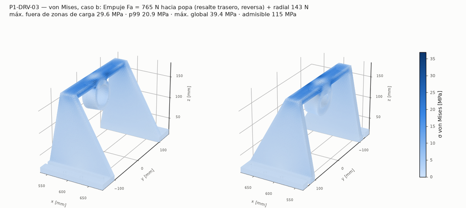
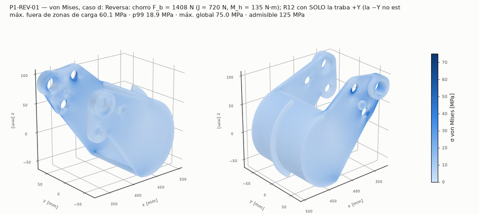
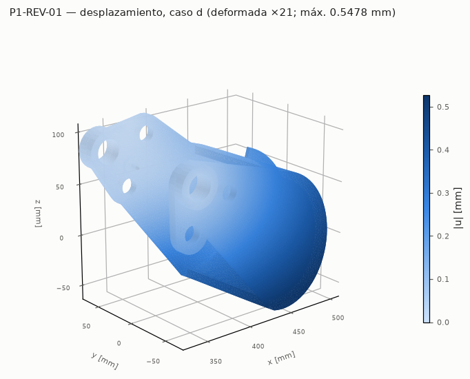
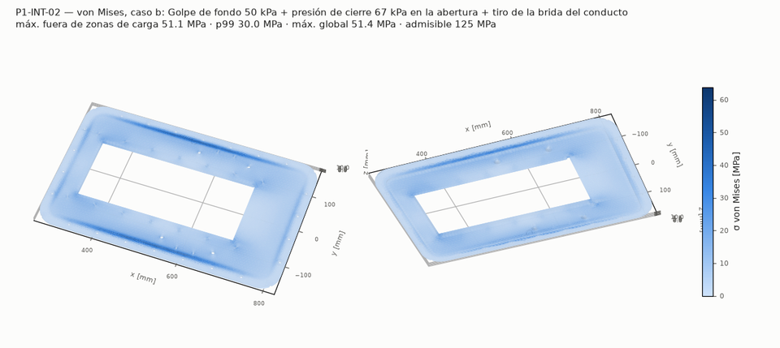
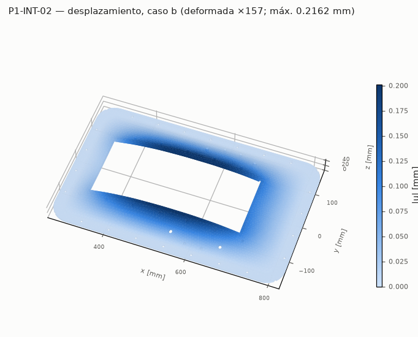
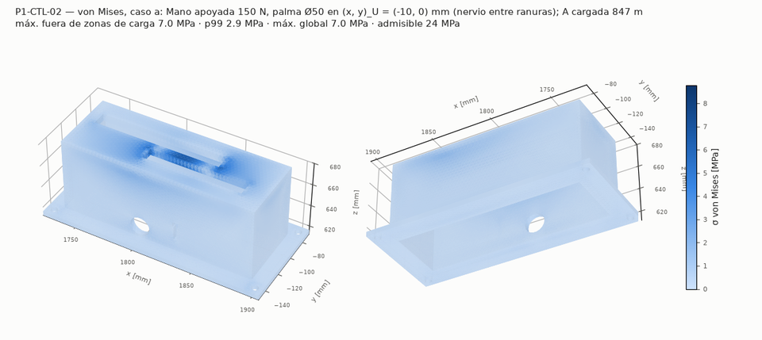
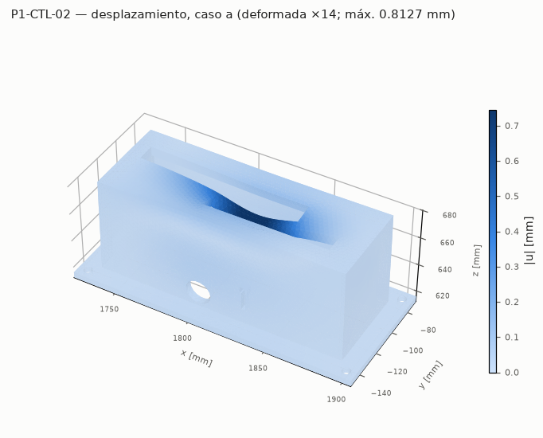
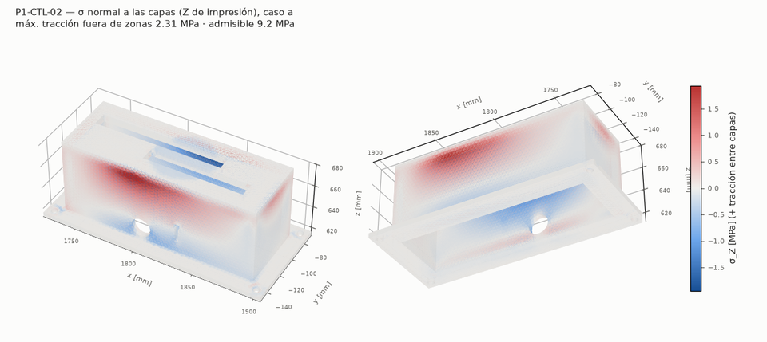

Resultados FEA
Elementos finitos de las piezas críticas
gmsh (STEP/OCC, optimización Netgen) → tetraedros; elasticidad lineal P2 (10 nodos), isotrópico; PCG + precondicionador P2→P1; contacto unilateral por conjunto activo. Corrida del 2026-10-02. Método, cargas, admisibles y comparación con el cálculo a mano: 04_diseno/fea/README. [CALCULADO]
| Pieza | FS mín. / objetivo | Cumple | Caso gobernante | Material |
|---|---|---|---|---|
| P1-DRV-03Pórtico Al 6082 sobre el conducto: alojamiento 2×7204 BECBP, 4×M8 a la placa base | 3,89 / 2 | sí | b Empuje Fa = 765 N hacia popa (resalte trasero, reversa) + radial 143 N | Al 6082-T651 soldado (ZAT) |
| P1-REV-01Bucket de reversa Al 5083 8 mm (cuchara + brazos + nervio), traba en cada brazo (cada una lleva todo M_h) | 2,08 / 2 | sí | d Reversa: chorro F_b = 1408 N (J = 720 N, M_h = 135 N·m); R12 con SOLO la traba +Y (la −Y no está): M_h completo por el brazo +Y (DISEÑO) | Al 5083-O/H111 (= ZAT) |
| P1-STE-01Boquilla direccional con orejas de pivote, torre del yugo y orejas del bucket | 2,33 / 2 | sí | f Reversa de sizing (F_b = 698 N, M_h = 67.1 N·m) con M_h completo en la traba +Y (fatiga) | Al 6061-T6 |
| P1-INT-02Placa base de la toma Al 5083 10 mm: cuerpo enrasado + ala abulonada al casco, cuña de la rampa, roscas del conducto y del soporte de rodamientos | 2,45 / 2 | sí | b Golpe de fondo 50 kPa + presión de cierre 67 kPa en la abertura + tiro de la brida del conducto 4049 N (placa sola, sin la rigidez del conducto: conservador) | Al 5083-H111 |
| P1-CTL-02Caja PETG de palancas con sensor hall | 3,41 / 3 | sí | a Mano apoyada 150 N, palma Ø50 en (x, y)_U = (-10, 0) mm (nervio entre ranuras); A cargada 847 mm² | PETG |
P1-DRV-03 Pórtico Al 6082 sobre el conducto: alojamiento 2×7204 BECBP, 4×M8 a la placa base
FS 3,89 (objetivo 2) — cumple criterio vm · malla fina
- P1-DRV-03: FS = 3,89 (objetivo 2, cumple); caso b, criterio vm: σ de diseño 29,6 MPa (máx, máx gruesa→fina -0 %) en (590,7; -23,0; 169,5) mm; σvm p99 20,9 MPa (FS p99 5,50). Alma de ±0,35·Ø del alojamiento con empalmes r 3 alma–tablero y alma–alojamiento (auditoría ronda 3, F-03): el máximo queda sobre el empalme alma–tablero y converge (antes era una arista viva, en una cuña de ~30° entre el alojamiento y el tablero, que no convergía). Cumple con margen.
- ⚠ «Mejillas: empuje Fa a punto fijo en la base (cada una ½ Fa)»: FS mano 112,30 vs FS FEA 6,40 (-94 %). La fila solo mira la flexión de la mejilla en su plano por Fa/2 (sección 12 × 150, muy rígida). El FEA pone el máximo de la mejilla en su unión con el tablero: el tablero cargado por el alojamiento flexiona y arrastra el borde superior de la mejilla fuera de su plano (marco tablero + mejillas). Mecanismo que la fila no ve; nivel bajo.
- ⚠ «Tablero: 3 g vertical del tren + Fr (biapoyado entre mejillas) + Fa excéntrico»: FS mano 6,93 vs FS FEA 4,37 (-37 %). El máximo está en la unión del alma central con el tablero (ahora con empalme r 3): el momento de Fa excéntrico y el radial entran al tablero por el alma; la viga biapoyada de la fila no ve esa concentración. FS sobre 2.
- ⚠ «Alojamiento Ø47: Fa sobre el resalte trasero (reversa) / anillo»: FS mano 80,27 vs FS FEA 25,34 (-68 %). La fila es el corte medio del resalte (τ = Fa/(π·D·t)), un valor nominal; el FEA mide la flexión del resalte como placa anular (el aro apoya solo entre Da_max y D) y la del alojamiento en su unión con el alma. Ambos lejos del admisible.


P1-REV-01 Bucket de reversa Al 5083 8 mm (cuchara + brazos + nervio), traba en cada brazo (cada una lleva todo M_h)
FS 2,08 (objetivo 2) — cumple criterio vm · malla fina
- P1-REV-01: FS = 2,08 (objetivo 2, cumple); caso d, criterio vm: σ de diseño 60,1 MPa (máx, máx gruesa→fina +6 %) en (358,0; 64,5; 37,7) mm; σvm p99 18,9 MPa (FS p99 6,61). Criterio de traba única (ronda 4): con una traba sola (d/e a R12, f/g con la reversa de sizing contra el admisible de fatiga de soldadura) todo M_h pasa por un brazo y la cuchara abierta gira hasta él; el máximo queda en la cara exterior del brazo trabado, sobre su borde, bajo el pivote (el punto caliente de la ronda 3, ahora dentro de una esfera de refinamiento en las dos mallas). Con las dos trabas sin desfase (a, informativo) cada una toma la mitad de M_h. El borde de los agujeros de traba y de pivote (|σθ| de sección neta a ±90°) queda por debajo del cuerpo; el σvm de la ventana de la traba incluye el borde del contacto del perno rígido (aplastamiento). Carga = balance de cantidad de movimiento del chorro, con resultante y momento verificados contra bucket_reactions.
- ⚠ «Brazo trabado: flexión en su plano con M_h completo (R12, corta)»: FS mano 4,44 vs FS FEA 2,08 (-53 %). La fila es la flexión del brazo EN SU PLANO con M_h completo (sección t × 60). Con una traba sola (d, f) el FEA suma la flexión FUERA del plano y la torsión que mete la cuchara abierta al girar hasta el brazo trabado, con el pico en la cara exterior del brazo, sobre su borde bajo el pivote: mecanismo que la fila no ve; el FS de diseño es el del FEA.
- ⚠ «Brazo trabado: flexión en su plano con M_h completo (reversa sizing, fatiga de soldadura)»: FS mano 4,86 vs FS FEA 2,28 (-53 %). La fila es la flexión del brazo EN SU PLANO con M_h completo (sección t × 60). Con una traba sola (d, f) el FEA suma la flexión FUERA del plano y la torsión que mete la cuchara abierta al girar hasta el brazo trabado, con el pico en la cara exterior del brazo, sobre su borde bajo el pivote: mecanismo que la fila no ve; el FS de diseño es el del FEA.
- ⚠ «Cuchara como viga entre brazos (bucket R12, corta)»: FS mano 69,79 vs FS FEA 23,87 (-66 %). La fila trata la cuchara como viga entre brazos; con las dos trabas (a) la cuchara casi no trabaja (σ de pocos MPa en los dos modelos): diferencia relativa grande sobre valores chicos.
- ⚠ «Chapa de la cuchara: franja empotrada bajo la presión dinámica (corta)»: FS mano 51,25 vs FS FEA 23,34 (-54 %). La franja empotrada (p_dinámica) no incluye la flexión global de la cuchara; el FEA (caso a escalado a p_dinámica/q_entrada) mide la tensión total de la chapa. Ambos muy por debajo del admisible.
- ⚠ «Chapa de la cuchara: franja (fatiga de soldadura, 1e5)»: FS mano 27,88 vs FS FEA 12,70 (-54 %). La franja empotrada (p_dinámica) no incluye la flexión global de la cuchara; el FEA (caso a escalado a p_dinámica/q_entrada) mide la tensión total de la chapa. Ambos muy por debajo del admisible.
- ⚠ «Cuchara abierta a torsión con un solo brazo trabado (R12, corta)»: FS mano 2,17 vs FS FEA 6,15 (+184 %). La fila es torsión de Saint-Venant de la sección abierta con T = M_h en la unión con el brazo trabado, sin restricción de alabeo (cota). En el FEA (una traba sola) los brazos y el aro restringen el alabeo y parte del momento entra al brazo como flexión fuera del plano: la cuchara trabaja menos. Fila conservadora para la cuchara.
- ⚠ «Cuchara abierta a torsión con un solo brazo trabado (reversa sizing, fatiga de soldadura)»: FS mano 2,37 vs FS FEA 6,74 (+184 %). La fila es torsión de Saint-Venant de la sección abierta con T = M_h en la unión con el brazo trabado, sin restricción de alabeo (cota). En el FEA (una traba sola) los brazos y el aro restringen el alabeo y parte del momento entra al brazo como flexión fuera del plano: la cuchara trabaja menos. Fila conservadora para la cuchara.
- ⚠ «Agujero de traba: aplastamiento del brazo (perno Ø16, M_h completo, R12)»: FS mano 5,32 vs FS FEA 7,72 (+45 %). La fila es la presión media F/(d·t) con M_h completo en una traba; el FEA promedia σvm en un anillo de 3 mm alrededor del agujero de la traba cargada (caso d): por definición menor que el pico. Mismo orden de magnitud.


P1-STE-01 Boquilla direccional con orejas de pivote, torre del yugo y orejas del bucket
FS 2,33 (objetivo 2) — cumple criterio borde · malla fina
- P1-STE-01: FS = 2,33 (objetivo 2, cumple); caso f, criterio borde: borde del agujero «rosca_mas_y» a ±90° de la carga: |σθ| 38,7 MPa, gruesa→fina +8 % en (398,0; 52,0; 87,4) mm (cuerpo: FS 2,96); σvm p99 17,6 MPa (FS p99 5,10). Cargas del bucket autoequilibradas por oreja (ronda 4, F1): fuerza en el piloto Ø16 y en la rosca M24 de la misma oreja, momentos del muñón y del perno en voladizo como pares de resultante nula (brida y contratuerca); resultante y momento verificados contra la estática. Con M_h completo en una traba gobierna la oreja de esa traba: el borde de la rosca M24 o del piloto a ±90° de la carga (|σθ| de sección neta, que la exclusión del máx* tapaba: F3) y el contorno del lóbulo de la rosca en la cara exterior. Los casos de fatiga (f/f2) tienen el menor FS: la reversa de sizing es la mitad de R12 pero el admisible de fatiga es bastante menos que la mitad de la fluencia. El pico donde la oreja de pivote toca el labio de entrada (radio de 2 mm, F-03) converge.
- ⚠ «Flexión del tubo por el desvío del chorro (fatiga, sizing)»: FS mano 145,87 vs FS FEA 13,72 (-91 %). La fila trata el tubo Ø101 como viga (σ nominal < 1 MPa). En el FEA el máximo de la región del tubo está donde se le unen la torre y la oreja de pivote superior (entra el par del yugo y la reacción de los pernos): concentración local que la viga no ve. Nivel bajo (FS > 10).
- ⚠ «Oreja del bucket: flexión en su plano (R12, corta; pivote + traba con M_h completo)»: FS mano 6,26 vs FS FEA 3,91 (-38 %). Las filas usan una sección de raíz STE_ear_t × 36 bajo el pivote (en su plano: pivote + traba con M_h completo; fuera del plano: momento del espaciador). El FEA pone el máximo de la oreja en el lóbulo de la rosca M24 y en el borde de los agujeros, donde la fuerza del perno, el par de la contratuerca y el del espaciador concentran: mecanismo local que la viga no ve; el FS de diseño es el del FEA.
- ⚠ «Oreja del bucket: flexión (reversa sizing, fatiga; M_h completo en su traba)»: FS mano 4,73 vs FS FEA 2,96 (-38 %). Las filas usan una sección de raíz STE_ear_t × 36 bajo el pivote (en su plano: pivote + traba con M_h completo; fuera del plano: momento del espaciador). El FEA pone el máximo de la oreja en el lóbulo de la rosca M24 y en el borde de los agujeros, donde la fuerza del perno, el par de la contratuerca y el del espaciador concentran: mecanismo local que la viga no ve; el FS de diseño es el del FEA.
- ⚠ «Oreja del bucket: ligamento de la rosca M24 del émbolo (R12, M_h completo)»: FS mano 8,85 vs FS FEA 3,91 (-56 %). La fila es el desgarro de los dos ligamentos de la rosca M24 (τ media). El FEA da el máx* del lóbulo de la rosca fuera de r_excl (flexión del lóbulo por la fuerza del perno y el par de la contratuerca) y el borde del agujero aparte (tabla de bordes): mecanismos distintos.
- ⚠ «Oreja de pivote (dentro de la de la bomba): flexión de la raíz»: FS mano 103,14 vs FS FEA 6,37 (-94 %). La fila toma F/2 a 12 mm en 25 × 30. En el FEA los pernos de pivote reciben un par (reacciones opuestas en la mejilla Ø8 y en la rosca M6) porque el bucket empuja muy por encima del eje; el máximo está donde la oreja cilíndrica se une al frente esférico.


P1-INT-02 Placa base de la toma Al 5083 10 mm: cuerpo enrasado + ala abulonada al casco, cuña de la rampa, roscas del conducto y del soporte de rodamientos
FS 2,45 (objetivo 2) — cumple criterio vm · malla fina
- P1-INT-02: FS = 2,45 (objetivo 2, cumple); caso b, criterio vm: σ de diseño 51,1 MPa (máx, máx gruesa→fina +7 %) en (525,6; 149,4; 10,0) mm; σvm p99 30,0 MPa (FS p99 4,16). Gobierna el golpe de fondo con la placa sola (b): máximo en la cara superior sobre el borde del apoyo del ala (unión cuerpo–ala), convergido. Con el conducto como rigidizador (b2) baja a ≈ 18 MPa. Los avellanados M8 del pórtico: σvm promedio bajo el cono ≈ presión de la fila a mano.
- ⚠ «Paño lateral entre bulones del conducto y del ala: golpe de fondo»: FS mano 106,56 vs FS FEA 6,85 (-94 %). La fila apoya el paño en la línea de bulones del conducto (luz 68 mm a lo ancho). Placa sola (b): sin el conducto, la franja entre la abertura y el ala trabaja a lo largo y el máximo sale en la unión cuerpo–ala; es la cota conservadora. Con el conducto rígido (b2) se recupera el modelo de la fila; la realidad está entre ambos.
- ⚠ «Paño lateral entre bulones del conducto y del ala: golpe de fondo»: FS mano 106,56 vs FS FEA 2,45 (-98 %). La fila apoya el paño en la línea de bulones del conducto (luz 68 mm a lo ancho). Placa sola (b): sin el conducto, la franja entre la abertura y el ala trabaja a lo largo y el máximo sale en la unión cuerpo–ala; es la cota conservadora. Con el conducto rígido (b2) se recupera el modelo de la fila; la realidad está entre ambos.
- ⚠ «Arranque de la cabeza M8 a través de la placa (tapón de Ø dk sobre el cono)»: FS mano 2,94 vs FS FEA 5,54 (+89 %). La fila usa τ media en el cilindro Ø dk × (t − h_cono) suponiendo que todo el tiro pasa por corte puro. En el FEA la compresión de la zapata sobre la cara superior equilibra la precarga en el mismo lugar y el cilindro no está en corte puro: el promedio de σvm en ese volumen es menor. Fila conservadora.


P1-CTL-02 Caja PETG de palancas con sensor hall
FS 3,41 (objetivo 3) — cumple criterio vm · malla fina
- P1-CTL-02: FS = 3,41 (objetivo 3, cumple); caso a, criterio vm: σ de diseño 7,0 MPa (máx, máx gruesa→fina +2 %) en (1820,6; -108,8; 674,0) mm; σvm p99 2,9 MPa (FS p99 8,34). Paredes de 5 mm engrosadas hacia afuera (ronda 3, F-02; el entrehierro del sensor hall no cambia): gobierna la tapa (von Mises) y la tracción entre capas de las paredes ya no manda; la variante V1 (paredes de 4 mm) muestra la sensibilidad. La pieza real es 5 perímetros + 30 % giroide (solid_frac 0,55): el FEA macizo es optimista.
- ⚠ «Tapa PETG 6 mm: mano apoyada 150 N [SUPUESTO] (corta)»: FS mano 3,84 vs FS FEA 5,51 (+44 %). La fila es una franja 50 × 6 apoyada con luz 50; la tapa real está casi toda ranurada (ranuras de las palancas), y la palma carga el nervio de 6 mm entre las dos ranuras o la tapa angosta junto a la del bucket.


